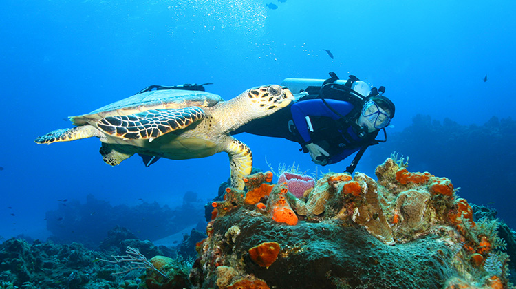
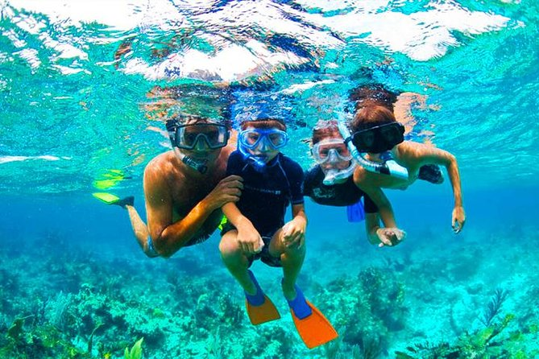
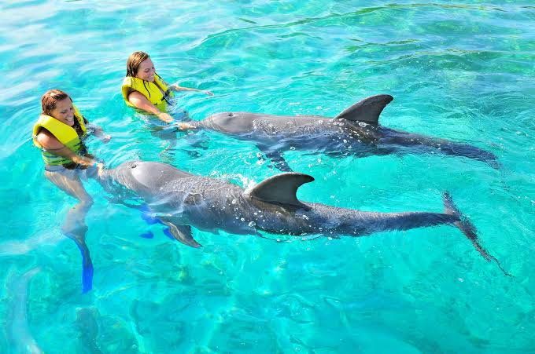
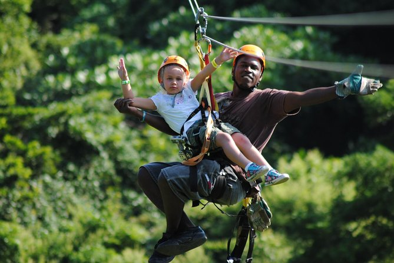
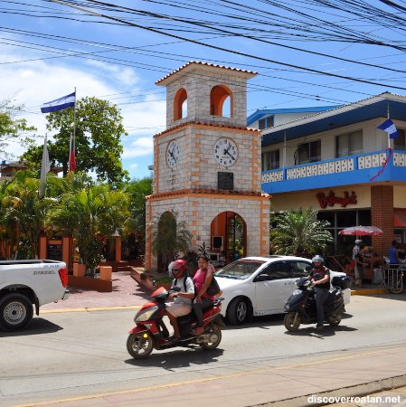
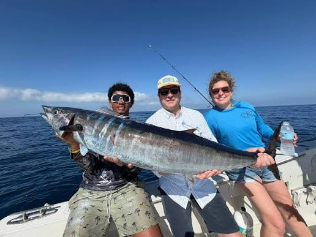
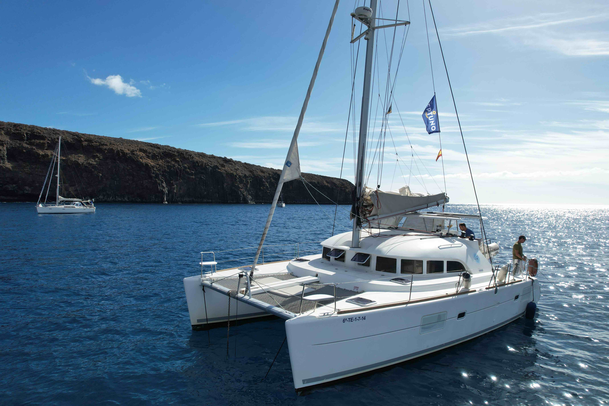
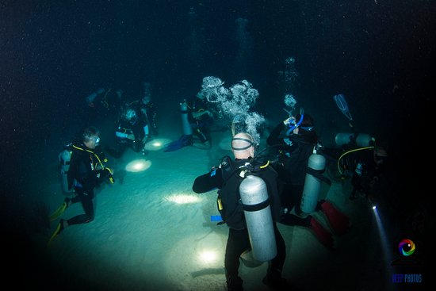

Buceo · 2 tanques
Buceo en el Arrecife
Dos inmersiones guiadas en los mejores puntos del arrecife de Roatán, para buzos certificados.
Roatán, Islas de la Bahía · Honduras
Buceo, snorkel, catamarán y aventura en la selva — tours locales, guiados por gente de la isla que la conoce de memoria.
Catálogo
Precios de ejemplo por persona en USD. Grupos pequeños, equipo incluido y guías certificados en cada salida.

Dos inmersiones guiadas en los mejores puntos del arrecife de Roatán, para buzos certificados.

Aguas poco profundas y cristalinas, ideales para toda la familia. Equipo y flotador incluidos.

Nada e interactúa con delfines nariz de botella junto a especialistas en Roatan Institute for Marine Sciences.

Doce líneas sobre el dosel tropical con vistas al Caribe. Incluye transporte desde tu hotel.

Recorrido por Coxen Hole, Sandy Bay y una comunidad garífuna, con parada en mercado local.

Salida en lancha equipada para dorado, wahoo y marlín. Incluye carnada, hielo y capitán.

Vela relajada frente a la costa con bebida de bienvenida y música en vivo mientras cae el sol.

El arrecife cambia por completo de noche. Para buzos con experiencia, linternas incluidas.
Galería
Siempre trabajando con los mejores.
Nosotros
Kyo's Roatan Tours es una operadora local fundada por familias de la isla. Empezamos con un solo bote y la idea de mostrarles a los visitantes el Roatán que nosotros conocemos: el arrecife, los pueblos garífuna, los atardeceres desde el agua.
Hoy trabajamos con guías certificados PADI, capitanes con licencia y un equipo local que cuida cada detalle, desde el equipo de buceo hasta la lonchera para el viaje.
Contacto
Escríbenos y te respondemos con disponibilidad, horarios de recogida y opciones para tu grupo.